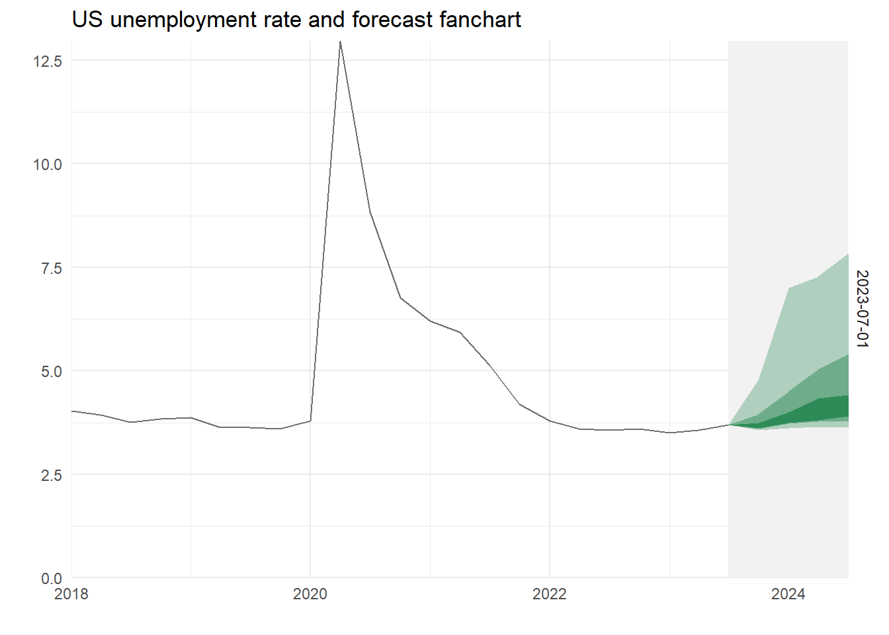

library(tidyverse)
library(readxl)
library(quantreg)
library(moments)
fls <- "spfmicrodata.xlsx"
UNRATE <- read_csv("UNRATE (1).csv", col_types=cols(DATE=col_date(format="%d/%m/%Y"))) %>%
select(Date=DATE, UNRATE) %>%
mutate(UNRATE=as.numeric(UNRATE)) %>%
drop_na()
mx <- read_excel(fls, sheet="UNEMP", na="#N/A", col_types="numeric") %>%
unite(Date, c(YEAR, QUARTER), sep=" ") %>%
mutate(Date = yq(Date)) %>%
select(Date, UNEMP0=UNEMP2, UNEMP1=UNEMP3, UNEMP2=UNEMP4, UNEMP3=UNEMP5, UNEMP4=UNEMP6, ID) %>%
pivot_longer(cols=-c(Date, ID), names_to="Horizon") %>%
group_by(Date, Horizon) %>%
summarise(av = mean(value, na.rm=TRUE)) %>%
mutate(Horizon = as.integer(str_sub(Horizon,6,6))) %>%
ungroup() %>%
drop_na()
# Pivot wider to put each series in a column to merge with UNEMP data
mxb <- mx %>%
pivot_longer(cols = -c(Date, Horizon), names_to = "Variable") %>%
unite("Names", Variable:Horizon, sep="") %>%
pivot_wider(names_from = Names) %>%
slice(-n())
UNEMP <- UNRATE %>%
#group_by(paste(year(Date), quarter(Date))) %>%
#summarise(Date=min(Date), UNRATE=mean(UNRATE)) %>%
#select(Date, UNRATE) %>%
right_join(mxb, by="Date")
# QReg
sf <- seq(.05,.95,.15)[-4]
tail_colour <- "grey95"
centre_colour <- "seagreen"
nq <- length(sf)
nv <- length(centre_colour)
col <- colorRampPalette(c(rbind(tail_colour, centre_colour), tail_colour))(nv*nq+1)[-1]
ystart <- 2017
ares <- NULL
for (i in 0:4) {
reg <- c(paste0("av",i))
eq <- formula(paste0("lead(UNRATE,",(i+1),") ~ ", reg))
eqrq <- rq(eq, data=UNEMP, tau=sf)
res <- broom::tidy(eqrq) %>%
group_by(tau) %>%
mutate(dta = unlist(c(1, slice(select(UNEMP, reg), n())))) %>%
mutate(q = sum(estimate*dta)) %>%
ungroup %>%
mutate(Vintage = max(UNEMP$Date), Horizon = i)
ares <- bind_rows(ares, res)
}
aresx <- ares %>%
select(tau, q, Vintage, Horizon) %>%
distinct() %>%
left_join(select(UNEMP, Date, UNRATE), by=c("Vintage" = "Date")) %>%
mutate(q = if_else(Horizon == 0, UNRATE, q)) %>%
pivot_wider(names_from = tau, names_prefix = "tau=", values_from = q) %>%
group_by(Vintage) %>%
mutate(fdate = seq.Date(from = Vintage[1], by = "quarter", length.out = 5)) %>%
ungroup() %>%
pivot_longer(starts_with("tau"), names_to = "q", values_to = "Vals") %>%
mutate(qs = paste0("Q", q)) %>%
mutate(qs = as_factor(desc(qs))) %>%
select(-UNRATE)
bck <- UNEMP %>%
select(Date, UNRATE) %>%
filter(year(Date) > ystart) %>%
mutate(Vintage = list(unique(aresx$Vintage))) %>%
unnest(cols = Vintage) %>%
group_by(Vintage) %>%
filter(Date <= Vintage) %>%
ungroup() %>%
arrange(Vintage, Date)
ggplot(aresx) +
geom_rect(aes(xmin=fdate, xmax=max(fdate), ymin=-Inf, ymax=Inf, group=q), fill=tail_colour) +
geom_area(aes(x=fdate, y=Vals, group=qs, fill=qs), position="identity") +
scale_fill_manual(values=col) +
theme_minimal() +
theme(legend.position = "none") +
scale_x_date(expand = c(0,0)) +
scale_y_continuous(expand = c(0,0)) +
geom_line(data=bck, aes(x=Date, y=UNRATE), colour="grey44") +
facet_grid(Vintage ~ .) +
labs(title=paste("US unemployment rate and forecast fanchart"), y="", x="") 